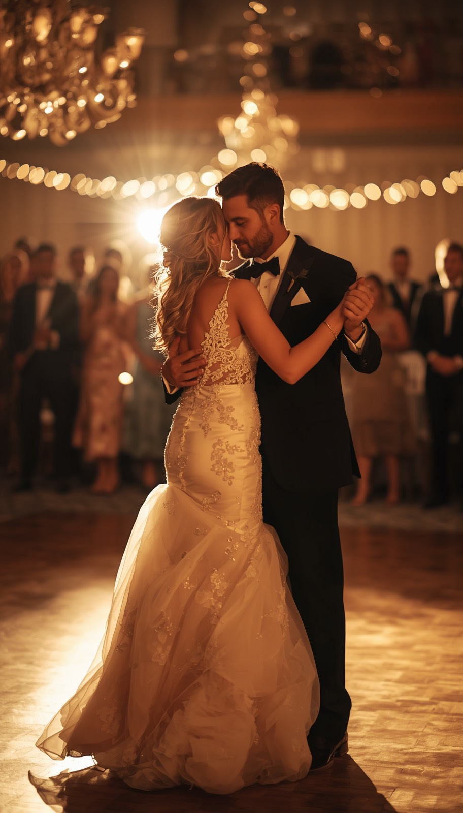

I plan your wedding, I host it and I DJ it. Same person, every time, from the first meeting to the last song. Twenty minutes from my office in Burlington, and no handoffs anywhere in between.
Hamilton weddings often mean scale. Two hundred and fifty people, a long head table, three generations in the room and a family that has been to a lot of weddings and knows what a good one feels like. That is my favourite kind of night, and it is also the kind of night that goes wrong quietly when nobody is holding the whole shape of it.
A room like Liuna Station or Carmen's does not need someone to shout into it. It needs someone who knows when dinner service is actually going to clear, when to hold the speeches, and how long the gap between the last plate and the first dance can be before the room loses its charge. That is MC work, and it is inseparable from the music. Which is why I do both.
Hamilton also has more variety than people give it credit for. A converted train station, a brick factory floor downtown, a coach house behind a castle, a botanical garden and a farm, all inside twenty minutes of each other. I am twenty minutes away myself, up the 403 from Burlington, so I can see the room before the day rather than meeting it at four in the afternoon.
Most Hamilton couples end up investing somewhere between $2,400 and $3,500, depending on how much of the day they want covered and what they add on. I would rather tell you that up front than make you fill in a form to find out.
Hamilton's wedding venues run from grand marble halls to purpose built downtown rooms. They are genuinely different problems to solve, and the difference shows most in the first twenty minutes of the reception. Two of these three I have worked many times over.
A restored train station with Italian marble and real grandeur, and honestly my favourite room in the region. I have hosted many weddings here. A space like this carries sound a long way, so the craft is filling it without letting speeches turn into echo.
Built for a big guest list and a long night, and a room I have worked many times. A room this size rewards a confident MC, because energy has to be led rather than left to find its own way.
Right in the core, built for a large guest list and a full evening. Purpose built rooms take the guesswork out of load-in, which means the timeline gets to be the interesting part instead of the logistics.
Liuna Station, Carmen's and Ancaster Mill I have worked many times. The others are real Hamilton and area wedding properties I have not necessarily hosted at, and I will tell you plainly which. Send me your venue and you will get a straight answer.
Nobody books a DJ for logistics. But the reason a night runs smoothly is almost always something nobody in the room ever noticed.
He was such a big help in the entire planning process. On the night of the wedding, the dance floor was full all night.
We're so glad we hired him as both our DJ and MC. He really did a great job with both roles.
Joe pays so much attention to detail and puts in great effort to knowing the bride, groom and wedding party.

I have hosted hundreds of weddings, and what I have really been learning all that time is what makes a night feel effortless. The timing of an entrance. The pause before a first dance. The song that finally fills the floor.
I am based in Burlington, twenty minutes from Hamilton, and Liuna Station is my favourite room in the whole region.
You stay present. I hold the rest. That's the whole idea.
Yes, regularly. My office is in Burlington, about twenty minutes from most Hamilton venues, so this is a core market for me rather than an occasional out-of-town trip.
Most couples invest somewhere between $2,400 and $3,500 with me. Where you land depends on coverage and any add-ons like uplighting or a separate ceremony setup. I give you a real number on the first call.
Yes. Large Hamilton rooms are some of my favourite nights, and I have done many of them at Liuna Station and Carmen's. Big guest lists need more MC leadership, not less, because the energy has further to travel and a passive host loses the room during dinner.
Yes, and I would argue that is the whole value. The person who built your timeline is the person announcing off it, so the transitions land instead of getting relayed between two vendors.
It varies. Downtown venues close to residential blocks generally finish earlier than the larger banquet centres, and some contracts include a decibel limit. Your venue sets it and I build the night backwards from that time.
Peak season Saturdays typically go twelve to eighteen months out. Since I only take one wedding per day, my availability closes sooner than a company running several DJs at once.
Tell me about your Hamilton wedding. No pressure, no obligation, just a conversation about the night you're picturing.
Most couples invest somewhere between $2,400 and $3,500.